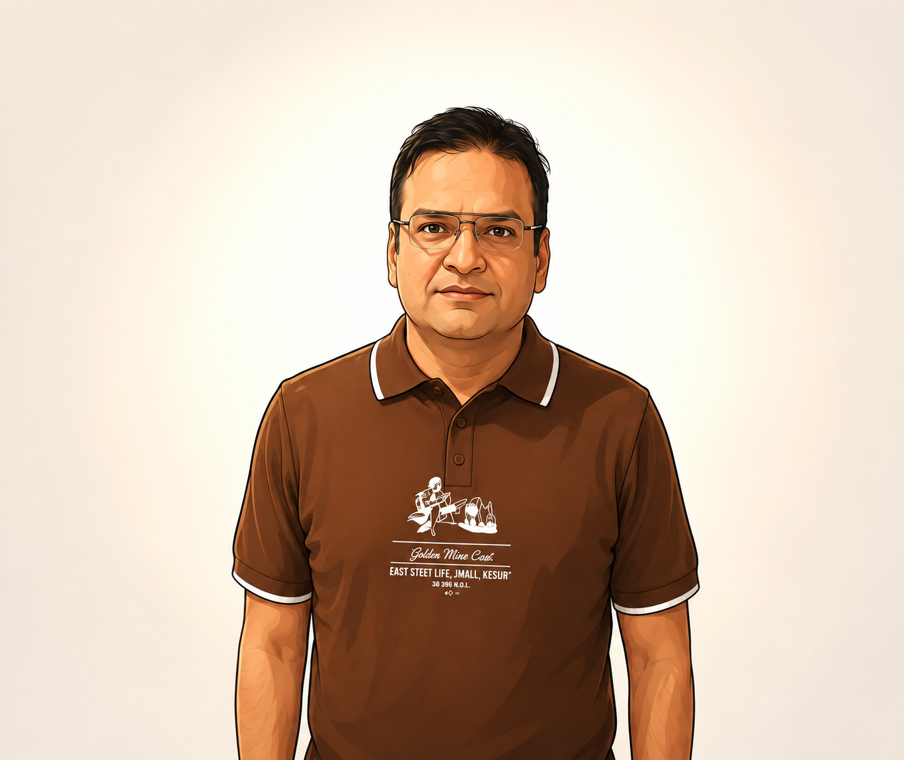

Available for consulting · Pune / Remote
Ankit Sharma compliance & code, done elegantly.
Sr. Technology Specialist at Amdocs with 10+ years in open-source compliance. I turn license risk into shipping confidence — with Python, modern web tooling, and AI-assisted engineering.
I work as a FOSS Consultant
- Experience
- 10+ yrs
- Companies
- 4
- Audits & reviews
- 200+

compliance
Trusted tooling I work with daily
- Black Duck Protex
- Black Duck Hub
- Code Centre
- FOSSology
- Python
- AI Tooling
01 Who I am
A specialist who speaks both legal risk and code.
Most compliance reviews stall between lawyers and engineers. I live in the middle — reading licenses like a specialist, fixing issues like a developer.
FOSS consultant and technology specialist with a decade in open-source compliance.
I work from Pune with 10+ years of experience in Open Source Software Compliance, hands-on with Black Duck Protex, Black Duck Hub, Code Centre, and FOSSology.
I’m a Python developer and intermediate web developer, comfortable with AI and modern tooling. Quick to learn, always exploring — learning will yield earning.
- Audit-ready SBOMs & attribution notices
- Copyleft & license-conflict remediation
- Python automation for scans & reports
02 Career
From consultancy to senior specialist.
A decade across license risk, IP, and technology leadership — each role deeper in the stack.
-
2014 — 2016 · 2 yrs
Lyra Infosystems
Solutions Consultant
Learned the compliance craft end-to-end: scanning, triage, and client-facing remediation guidance.
-
2016 — 2019 · 3 yrs
Siemens
License Management Risk Specialist
Owned license-risk reviews for large product lines; turned ambiguous findings into shippable decisions.
-
2019 — 2021 · 2 yrs
Edgeverve
Member, IP Professional
Bridged IP policy and engineering delivery — process, training, and pre-release clearance.
-
Current 2021 — Now · 5 yrs
Amdocs
Sr. Technology Specialist
Leading OSS compliance at scale, plus Python automation and AI-assisted review workflows.
03 What I do
Expertise you can put on a release checklist.
Engagements are practical and audit-ready — no 80-page PDFs that nobody reads.
-
OSS audits & clearance
Composition analysis, license identification, and risk sign-off using Protex, Hub, and FOSSology.
Protex · Hub · FOSSology -
License remediation
Copyleft conflicts, attribution gaps, and version upgrades — resolved with minimal churn to your roadmap.
GPL · MIT · Apache-2.0 -
Python automation
Scan parsers, SBOM generators, and compliance dashboards that cut review time from days to hours.
Python · SBOM · Scripting -
AI-assisted review
Careful, human-in-the-loop use of AI to triage findings, draft notices, and explain risk in plain language.
Triage · Drafting · QA -
Web development
Clean, responsive interfaces for reports and internal tools — accessible, fast, production-ready.
HTML · CSS · JS -
FOSS training & policy
Pragmatic guardrails developers actually follow: contribution rules, approval flows, and office hours.
Policy · Enablement
- 01ScanInventory everything, assume nothing.
- 02TriageSeparate noise from real risk.
- 03RemediateFix with code, upgrades, or notices.
- 04Ship & sustainDocument, automate, train.
04 Craft
Depth where it counts, curiosity everywhere else.
-
01OSS Compliance90%
-
02Python75%
-
03Vibe Coding75%
-
04Artificial Intelligence70%
-
05Web Development70%
Currently exploring
- LLM-assisted triage
- SBOM automation
- Modern CSS
- Technical writing
Quick to learn, always exploring — learning will yield earning.
“The best compliance review is the one developers don’t dread.”
— How I approach every audit
05 Off the clock
Beyond the keyboard.
What keeps me sharp, curious, and good company on a team.
-
Novel reading
Exploring worlds through words and imagination — a steady source of focus and empathy.
-
Table tennis & cricket
Staying active with competitive sport. Fast reflexes at the table, patience at the crease.
-
Blogging
Sharing knowledge and insights with the community — compliance notes, Python tips, AI notes.
06 Questions
Fair questions.
What does an OSS compliance review actually cover?
Full inventory of third-party code, license identification, obligation mapping (attribution, source disclosure, restrictions), conflict triage, and a clear ship / fix / escalate decision for each finding.
How do you work with engineering teams?
Async-first and developer-friendly: shared tracker, minimal meetings, fixes proposed as upgrades or patches — not just a list of problems. I also leave behind automation and short playbooks.
Can you help with Python or internal tooling?
Yes. I build small, maintainable Python utilities — scan parsers, SBOM and notice generators, and lightweight reporting pages — so compliance work stops being manual.
How do we start?
Send a short email describing your stack and release timeline. I reply within 48 hours with next steps and what I’d need from you.
07 Let’s talk
Have a release to clear, or an idea to build?
Collaborations, consultations, or a chat about open source, Python, or AI. The fastest way to reach me is email.